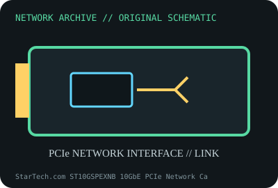

[ MODEL-SPECIFIC NETWORK HARDWARE ]
StarTech.com ST10GSPEXNB 10GbE PCIe Network Card
Single-port 10GBASE-T adapter with NBASE-T link fallback. Confirm exact product label and revision before applying specifications.

IDENTIFICATION: Confirm manufacturer PID, hardware revision, device ID or module suffix. Nominal standards/link rates are not measurements of payload performance.
Exact specifications and compatibility
| Dedicated subcategory | Ethernet adapters |
|---|---|
| Exact product/model | StarTech.com ST10GSPEXNB 10GbE PCIe Network Card |
| Bus, ports and physical interface | PCIe 3.0 x4 host bus; one RJ-45 copper port. |
| PHY, radio or protocol | Marvell/Aquantia AQC107-family 10GBASE-T PHY/controller; supports multigigabit negotiated rates per exact revision. |
| Nominal rate (not measured) | Up to 10Gb/s nominal on one link; no measured throughput claim. |
| Measured throughput | No measured benchmark is claimed for a physical specimen. A valid result must record host/peer, link partner, media/cable, driver/firmware, traffic pattern, test tool and duration. |
| Drivers, OS and firmware | StarTech product support supplies OS-specific drivers where required; Linux atlantic support depends on kernel and device ID. Confirm software for the card’s hardware revision. |
| Compatibility | PCIe x4 slot, short cable run/airflow appropriate to 10GBASE-T, and compatible multigigabit switch. |
| Variant warning | Do not confuse ST10GSPEXNB with ST10GSPEXND or dual-port models; PCI IDs and driver package can differ. Check product SKU and revision. |
Model and revision notes
Do not confuse ST10GSPEXNB with ST10GSPEXND or dual-port models; PCI IDs and driver package can differ. Check product SKU and revision.
StarTech product support supplies OS-specific drivers where required; Linux atlantic support depends on kernel and device ID. Confirm software for the card’s hardware revision.
PCIe x4 slot, short cable run/airflow appropriate to 10GBASE-T, and compatible multigigabit switch.
Archival, ESD and preservation notes
Record StarTech SKU, serial, MAC and device ID. Protect board/connector in ESD-safe packaging; leave heatsink unobstructed.
Document source URL, access date, document revision and specimen label/condition. Preserve without credentials or private configuration.
Primary manufacturer and standards sources
- StarTech ST10GSPEXNB product specificationsPrimary manufacturer or standards documentation; verify exact SKU and host revision.
- StarTech product drivers and supportPrimary manufacturer or standards documentation; verify exact SKU and host revision.
Manufacturer statements cover the named part or its documented product family; the exact labeled revision and vendor compatibility list take precedence.